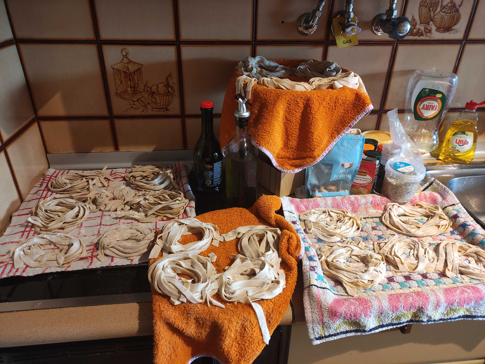

Maria Santos Portfolio
Hi! I am Maria. Get to know me and some of my work.
Personal Details
Hi, I'm Maria, a Data Analyst in the making. I love to be around nature and to read, specially Haruki Murakami. I am also a very creative person. I love to play with my cat and to have a nice cup of coffee. I love learning. Every day I observe something new and like to wonder how it works, whether that be about data, math, or human behaviour, I think the physicist inside of me loves to put a bit of math in everything. Lastly, I'm incredibly lucky in life, I love the family I've built and the home I come to every night.
Skills and Interests
I have built some skills over time, you can check out my cv here.
As for interest I have so many really, but here are some that have impacted my work:
Working in the gaming industry was a dream of mine, specially in mobile games as they have to archive a very delicaded balance to retain and entertain users. Every sunday I had the ritual of downloading some f2p game and dive into it the next week. I believe I've played 100+ games throughout the past few years. You can checkout some of my favourite games here.
Projects that got me my first job
Covid-19 World Data
A visualization of Covid-19 cases, hospitalizations and deaths around the World using Python, SQL and Power BI.
Deep Learning
Identify different types of flowers using PyTorch's and Deep Learning. Currently on progress.
Web Scrapping Amazon
Web Scrapping Amazon searches using Python's library: BeautifulSoup.
Hobbies
Reading, painting, cooking or baking, I love to do so many things! I could have a whole gallery of things but this picture warms my heart. I spent the whole day making pasta from morning to evening. The whole kitchen was a white with flour, even the cat got some of it! But the best part is having my beloved boyfriend helping me clean everything when I get tired, making jokes together of how everytime he cleans the whole house I immediatly make pasta. There is really no logic in that right?!
Get in touch